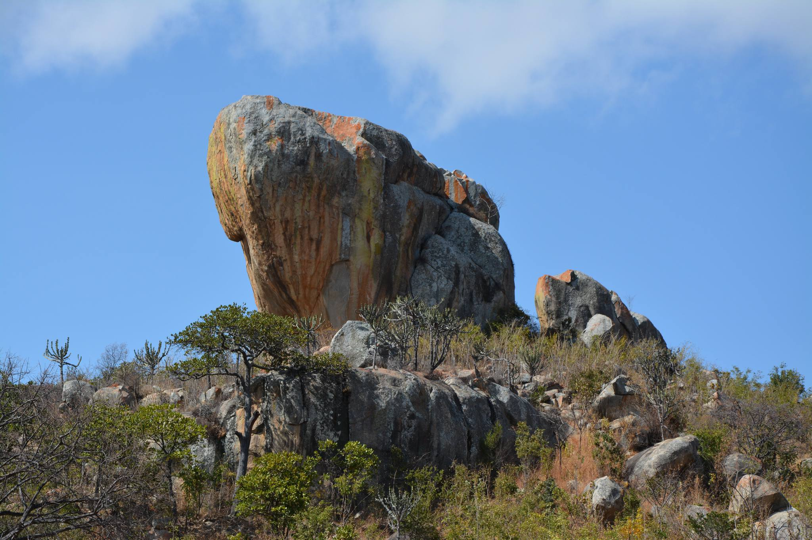
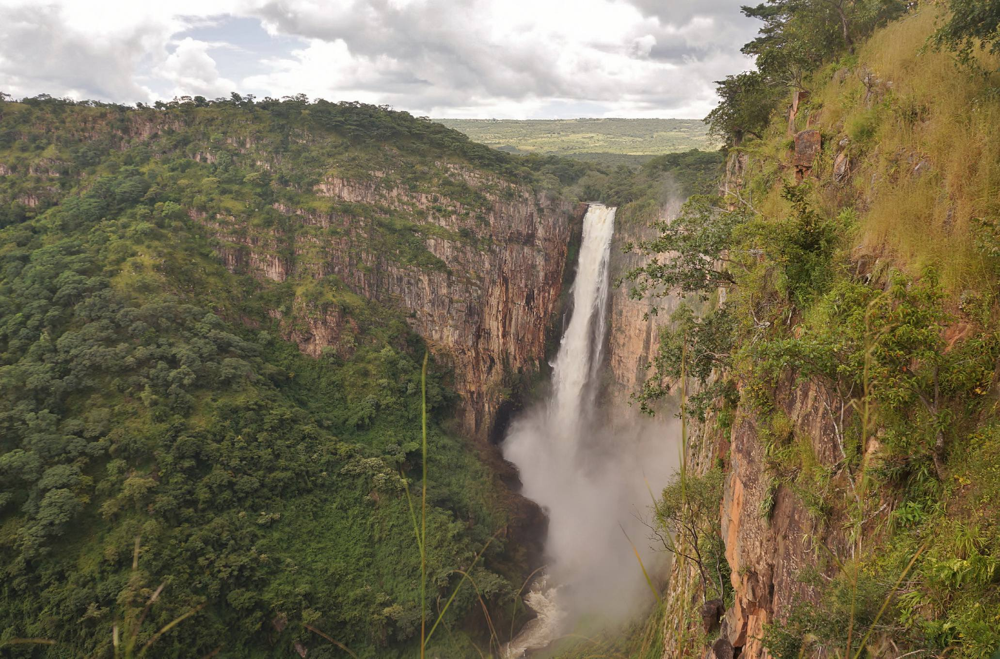
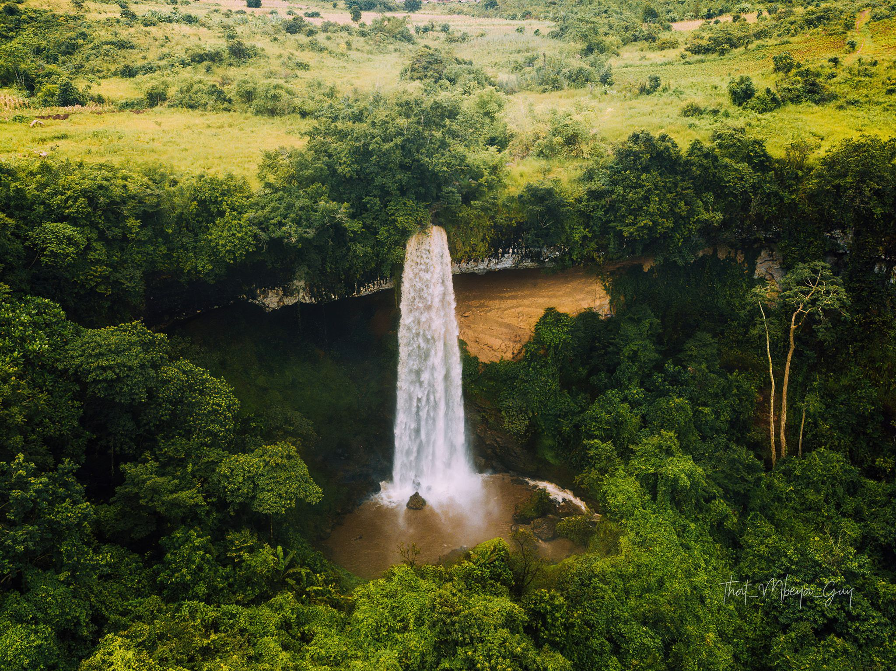
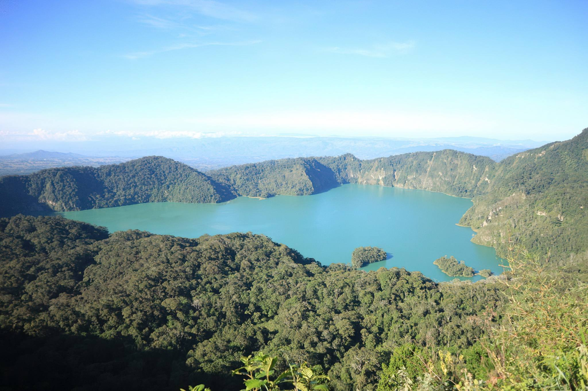
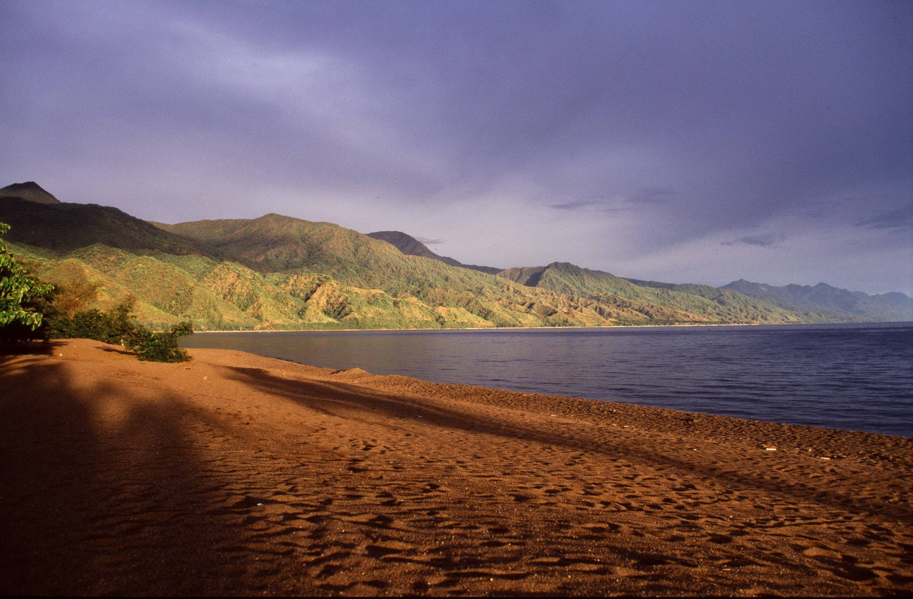
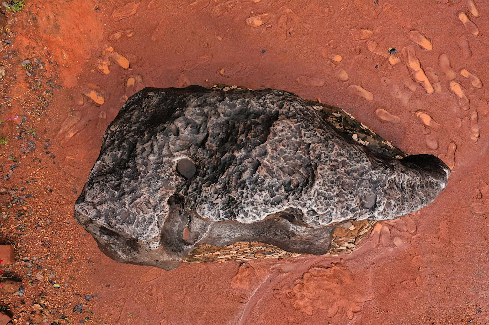
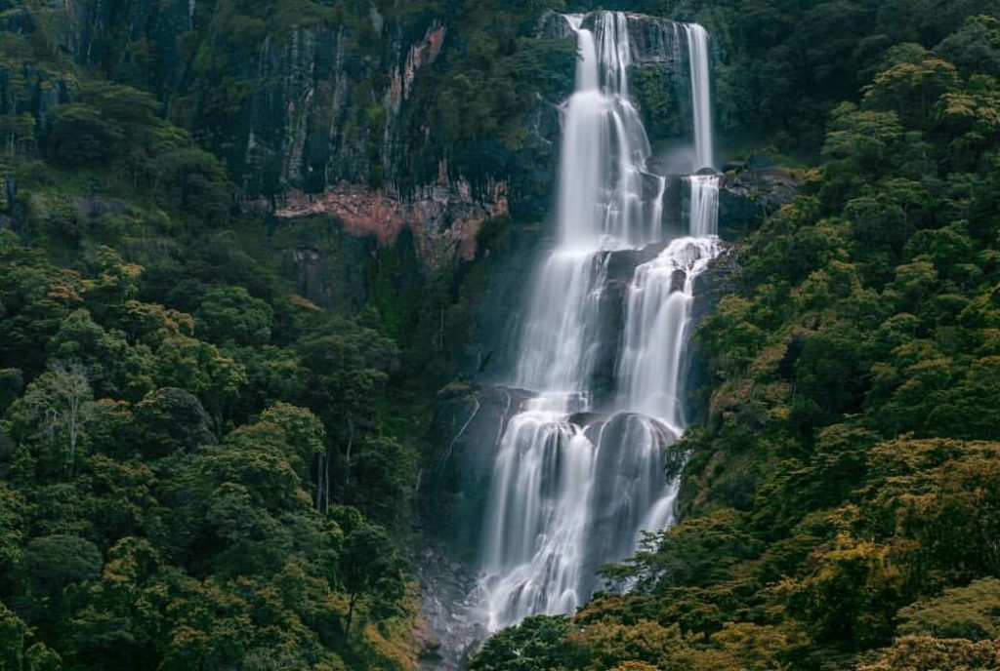

Remote, uncrowded wilderness in Ruaha, Mikumi, Udzungwa and Nyerere - authentic safaris away from the northern crowds, ideal from Dar es Salaam or Iringa.
Destinations in this Circuit

Igeleke Rock Art Site
The ochre drawings depict human figures, an elephant, jumping eland and giraffe hiding in long grass.

Kalambo Falls
Besides the Kalambo waterfalls, there are attractions like the Kalambo Gorge at downstream of the waterfalls,

Kaporogwe Falls
Counted as a thrilling attraction in Mbeya Region, Kaporogwe Falls are located some 25 kilometers from Tukuyu Township,

Kitulo National Park
The 'Serengeti of flowers' - alpine meadows and endemic orchids on the Kitulo Plateau.

Lake Ngozi
The lake is located about 38 kilometers south of Mbeya city, near the sprawling Tukuyu Township.

Lake Nyasa
Lake Nyasa (Nyasa means “lake”) is located at the south-west of Tanzania,

Matema Beach
The lakeshore beach lies on the foothills and the end point of Livingstone Mountains at the place where these scenic…

Mbozi Meteorite
Scientists are unsure when it hit the earth, but it is assumed to have been many thousands of years ago,

Mikumi National Park
The 'mini Serengeti' - open plains and guaranteed wildlife just hours from Dar es Salaam.

Mnazi Bay - Ruvuma Estuary Marine Park
The environment within the park includes mangroves, rocky and sandy shoreline, mudflats, salt pans, fringing coral…

Mpanga Kipengere
Pristine montane grasslands and the Kipengere Range on Tanzania's southern highlands.

Nyerere National Park
Africa's largest protected area - boat safaris, wild dogs and the mighty Rufiji River.
Ruaha National Park
Tanzania's largest park - wild dogs, elephant super-herds and rugged baobab wilderness.

Udzungwa Mountains National Park
Sanje Falls, endemic colobus monkeys and pristine Eastern Arc rainforest.
Safari Packages

Day Trip to Mikumi National Park
From $638 / person
A day trip to Mikumi National Park from Dar es Salaam, this is a shortest safari offered in the southern Tanzania (Day safari to Tanzania). Day Trip Mikumi National Park (Safari fr
View Itinerary
Day Trip to Nyerere National Park
From $638 / person
This 1 Day Trip to Nyerere National Park formerly (Selous Game Reserve) a Tanzania’s iconic and beautiful National Park, one of the few Protected Areas in the country’s southern ci
View Itinerary3 Days Mikumi Safari
From $950 / person
A short, accessible safari to Mikumi National Park from Dar es Salaam - ideal for weekend wildlife escapes on the Mkata floodplain.
View Itinerary5 Days Ruaha Safari
From $2,450 / person
Five days in Tanzania's largest park - wild dogs, elephant super-herds and baobab wilderness along the Great Ruaha River.
View Itinerary
Southern Tanzania Explorer
From $4,850 / person
Comprehensive southern circuit - Ruaha, Nyerere, Mikumi, Udzungwa and Iringa cultural sites in one grand journey.
View Itinerary
10 Days Safari to Nyerere, Mikumi Udzungwa & Ruaha National Parks
Price on request
This 10 Day Safari you will visit Nyerere (Selous), Udzungwa, Ruaha & Mikumi Parks, a perfect adventure for wildlife enthusiasts, serious safari-goers or newcomers alike, this jour
View Itinerary
2 Days Safari to Mikumi National Park
Price on request
Our 2 Days Game viewing Safari in Mikumi National Park will give you the most incredible game encounters taking you from Dar es Salaam, you will have most exciting remarkable adven
View Itinerary
2 Days Safari to Nyerere National Park
Price on request
A 2 Day Trip to Nyerere National Park formerly (Selous Game Reserve) a Tanzania’s iconic and beautiful National Park and one of the few Protected Areas in the country’s southern ci
View Itinerary
2 Days Safari to Ruaha National Park
Price on request
The 2 Days Safari flying to Ruaha National Park will give you a memorable adventure in this great remote wilderness of Ruaha that gives you an opportunity to discover the diverse i
View Itinerary
2 Days to Udzungwa Mountains National Park
Price on request
A 2 Days Udzungwa Mountains National Park Safari will take you from Dar es Salaam to Udzungwa via Morogoro. Udzungwa Mountains are rich with uniqueness in nature and wildlife, you
View Itinerary
3 Day Safari to Nyerere National Park
Price on request
This 3 Days Trip to Nyerere National Park formerly (Selous Game Reserve) is Tanzania’s iconic and beautiful National Park, one of the few Protected Areas in the country’s southern
View Itinerary
3 Days Safari to Mikumi National Park
Price on request
Your 3 Days Game viewing Safari in Mikumi National Park will give you the most incredible game encounters taking you from Dar es Salaam, you will have most exciting remarkable adve
View Itinerary
3 Days Safari to Nyerere and Mikumi National Parks
Price on request
This 3 Days safari to Nyerere (Selous) and Mikumi is ideal short safari on the Tanzania Southern Circuit. Nyerere Park size is stunning, bigger than Switzerland or Denmark, uninhab
View Itinerary
3 Days Safari to Ruaha National Park
Price on request
This 3 Days Safari driving to Ruaha National Park will give you a memorable adventure in this great remote wilderness of Ruaha that gives you an opportunity to discover the diverse
View Itinerary
3 Days Safari to Udzungwa & Mikumi National Parks
Price on request
This 3 Days safari to Udzungwa and Mikumi is ideal safari for the experience Game Safari & Hiking. The Udzungwa Mountains National Park is a sumptuous forested reserve, a rare trop
View Itinerary
4 Days Safari in Ruaha National Park
Price on request
This 4 Days Game Safaris in Ruaha National Park will give you a great intriguing adventure in this remote and untouched wilderness reserve as you fly from Dar es Salaam or by road
View Itinerary
4 Days Safari to Mikumi & Udzungwa National Parks
Price on request
This 4 Days safari to Udzungwa and Mikumi is ideal safari for the experience Game Safari & Hiking. The Udzungwa Mountains National Park is a sumptuous forested reserve, a rare trop
View Itinerary4 Days Safari to Nyerere and Mikumi National Parks
Price on request
This 4 Day Safari you will visit 2 Southern Tanzania National Parks including Nyerere and Mikumi. You will have plenty of time for extensive animal watching, river boating and the
View Itinerary
5 Days Safari to Mikumi & Ruaha National Parks
Price on request
This 5 Day Safari you will visit Mikumi & Ruaha National Parks that lies deep in the South with its striking, rugged landscapes and abundant wildlife. The great Ruaha River provide
View Itinerary
7 Days Safari to Ruaha, Udzungwa and Mikumi National Parks
Price on request
This 7 Day Safari by road you will visit Ruaha, Udzungwa & Mikumi Parks, a perfect adventure for wildlife enthusiasts, serious safari-goers or newcomers alike, this journey promise
View ItineraryReady to explore the Southern Circuit?
Request a Quote